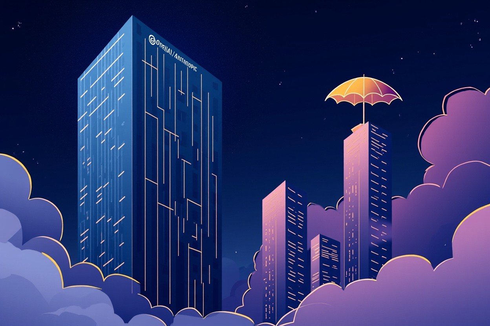

OpenAI 砸 40 億、Anthropic 砸 15 億親自做應用服務，獨立工程公司空間被鯨吞

當 AI 模型供應商親自下場做應用服務，獨立工程公司的生存空間備受擠壓。OpenAI 砸下 40 億美元、Anthropic 砸下 15 億美元親自提供企業 AI 人類監督服務，標志著 AI 行業從「工具供應商」轉變為「競爭對手」的商業模式轉向。
OpenAI 只用了 18 個月從工具供應商轉變為競爭對手服務公司。2026 年 5 月推出 DeployCo，斥資 40 億美元專門提供自家模型的人類監督服務，目標客戶正是那些已有數千家公司正幫其部署 AI 的企業。Anthropic 亦在同期以 15 億美元推出類似服務。
OpenAI 的 DeployCo（40 億美元）和 Anthropic 的類似服務（15 億美元），合計 55 億美元打造企業人類監督服務。這個數字揭示了 AI 巨頭對應用層的主動出擊，代價是那些原本扮演中間人角色的獨立工程公司。
這些公司的核心價值在於瞭解客戶基礎設施、擁有真實部署經驗和客户信任。但當模型供應商本身擁有這些優勢、並以資金規模碾壓時，其資訊優勢蕩然無存。150 名工程師分散到數千個投資組合公司，很快就捉襟見肘。
DeployCo 推出後一個月，OpenAI 再收購 Ona——一家在企業自有用雲端內安全運行 AI 代理的公司。一次收購是產品，兩次收購是模式。OpenAI 正在通過併購滲透部署層，因為純模型本身無法觸及這一層。
OpenAI：40 億美元（DeployCo）
Anthropic：15 億美元（人類監督服務）
總計：55 億美元打造企業人類監督服務
「你的供應商就是你的競爭對手，擁有你所無法比擬的資金、你無法看見的產品藍圖，以及你無法接觸的客戶群。」
— Denis Stetskov, Tech TrenchesSam Altman 和 Dario Amodei 花了兩年預測 AI 將取代大部分勞動力，如今自家公司正以 55 億美元親自示範：中間人角色的獨立 AI 部署公司，其生存空間正被供應商直接鯨吞。AWS 和 Salesforce 當年選擇與合作夥伴分享利潤，共同銷售，而非消滅它們；但 DeployCo 是被設計為競爭者，而非平台。這個 55 億美元的「坦白」，等於是告訴整個行業：純做應用的中間人，已經沒有存在的理由。
| 公司 | 行動 | 金額 | 目標 |
|---|---|---|---|
| OpenAI | 推出 DeployCo | 40 億美元 | 直接提供企業 AI 人類監督服務 |
| Anthropic | 推出類似服務 | 15 億美元 | 企業人類監督服務 |
| OpenAI | 收購 Ona | 未披露 | 在企業自有雲端運行 AI 代理 |
| AWS / Salesforce | 合作而非競爭 | — | 利潤分享、共同銷售，生態系共存 |